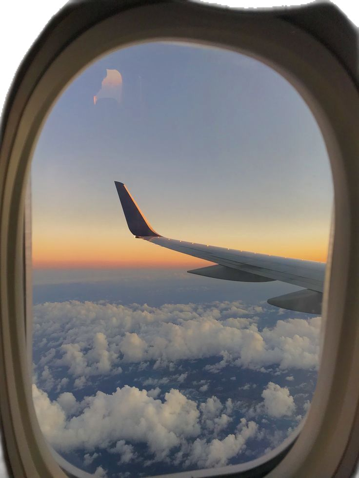
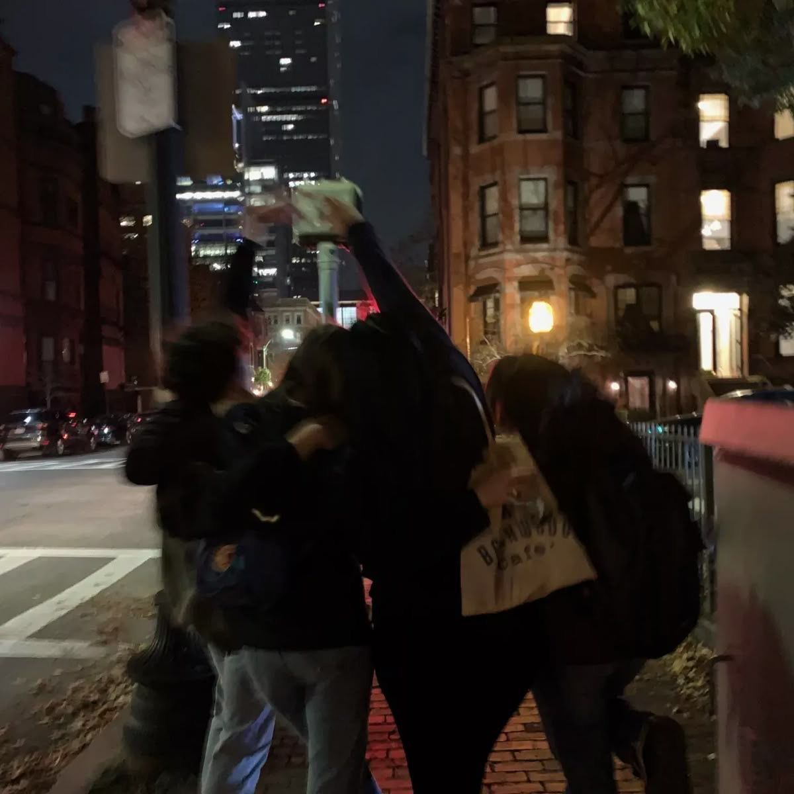
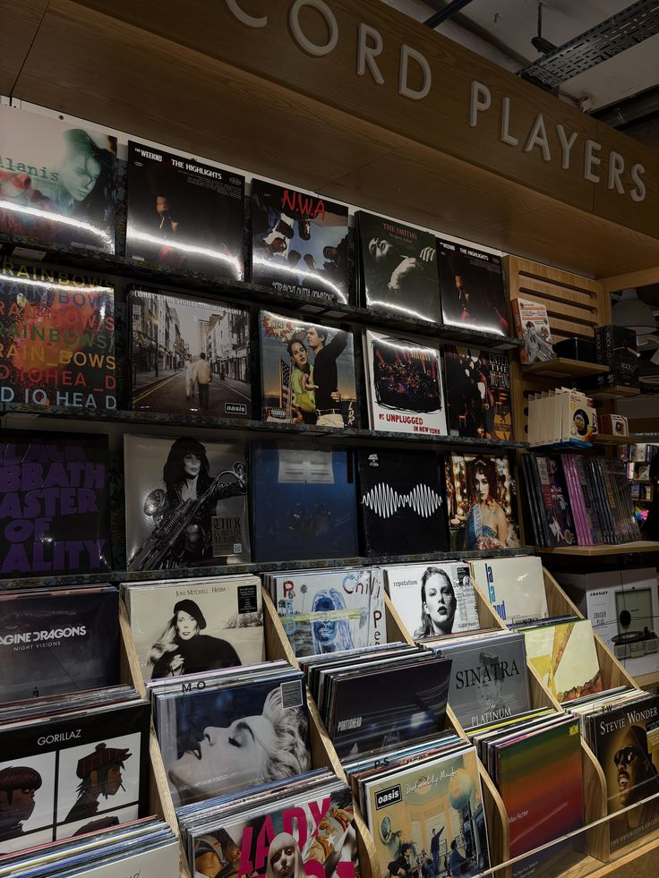
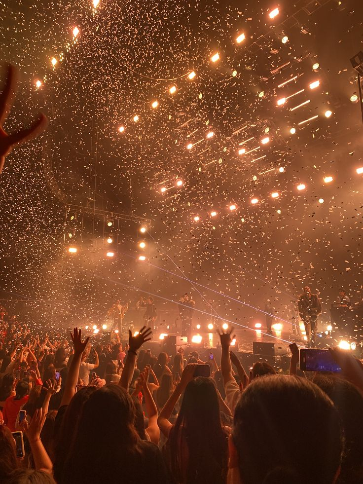

Ja sam Luči Ana Pavelka. Imam 19 godina i studiram na Grafičkom fakultetu u Zagrebu. Rođena sam i odrasla ovdje, na Trešnjevci. Pohađala sam Osnovnu školu Augusta Šenoe, a za srednju školu sam izabrala Nadbiskupsku klasičnu gimnaziju. Neki moji hobiji su crtanje/slikanje, igranje igrica i pečenje kolača. Volim putovati po svijetu, družiti se sa prijateljima i otkrivati nove stvari i mjesta.
One too many years
Some tattooed eyelids on a facelift
Thought you might want to know now
Mind over matter is magic, I do magic
If you think about it, it'll be over in no time
And that's life



